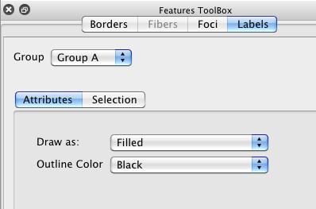
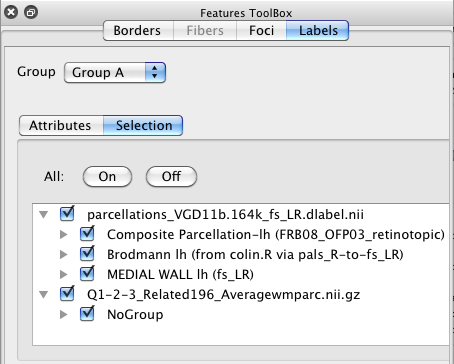

Labels
The Labels Tab in the Features Toolbox
contains options for display and selection of loaded labels (named
colored regions) on brain surfaces and in volumes. When
labels are displayed, labelled regions appear painted on the brain
surface/volume.
- Group: identifies the Label group
for the Active Tab. Tabs assigned to the same Group will
display the same labels with the same attributes.
- Label Attributes contains options
for viewing labels.
- Draw As sets the style of the
label display (Filled, Filled and Outline Color, Outline
Color, Outline Label Color). Outline Label Color will
display an outline for each label using the same color as
the Filled (label) color.
- Outline Color sets the color of
the label outline, if Filled and Outline Color or Outline
Color are selected as the Draw As style.

- Labels Selection controls group
and individual display selection for labels. If a higher level
group is selected on or off, all labels below that level will
be similarly selected on/off. The All On/Off buttons
allow for quick toggling of all labels on or off.
